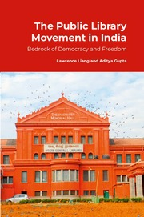
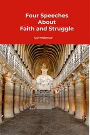

Feb 2023
Controlled Lending by Public Libraries Under Indian Law
Lawrence Liang and Carl Malamud
A draft paper for public review on how public libraries in India lend books. Comments are welcome.
Publications
Reading on public libraries, the law and the freedom to read. All free on the Internet Archive.
Lawrence Liang and Carl Malamud
A draft paper for public review on how public libraries in India lend books. Comments are welcome.

Lawrence Liang and Aditya Gupta
A history of the part public libraries played in India’s freedom movement, including the efforts to pass library laws, state and national.

Carl Malamud
Four speeches, including Gyan Satyagraha, given at Kannada University, Hampi on 15 April 2024.